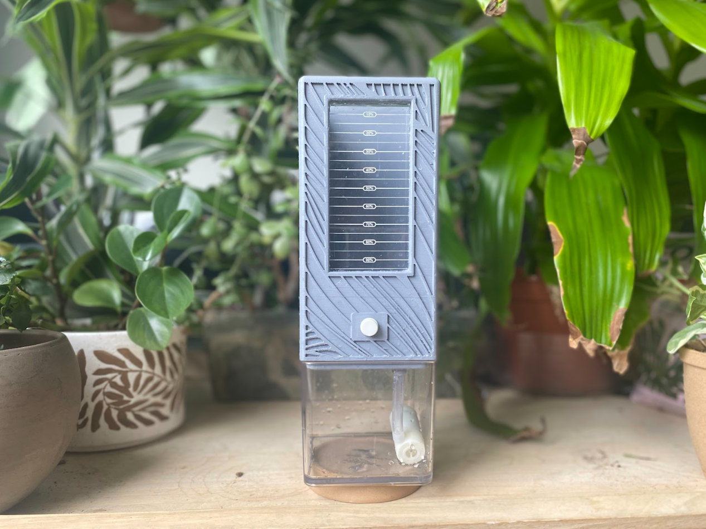
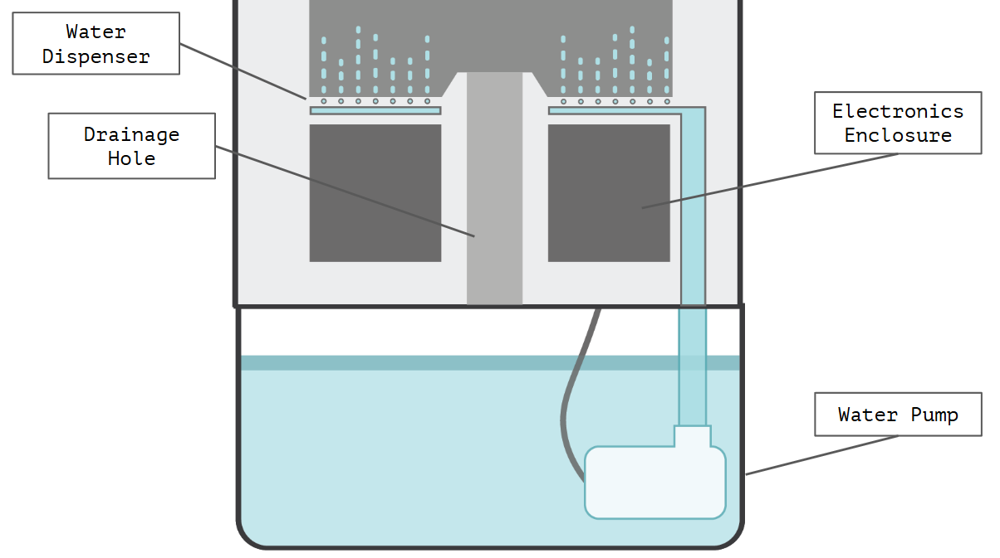
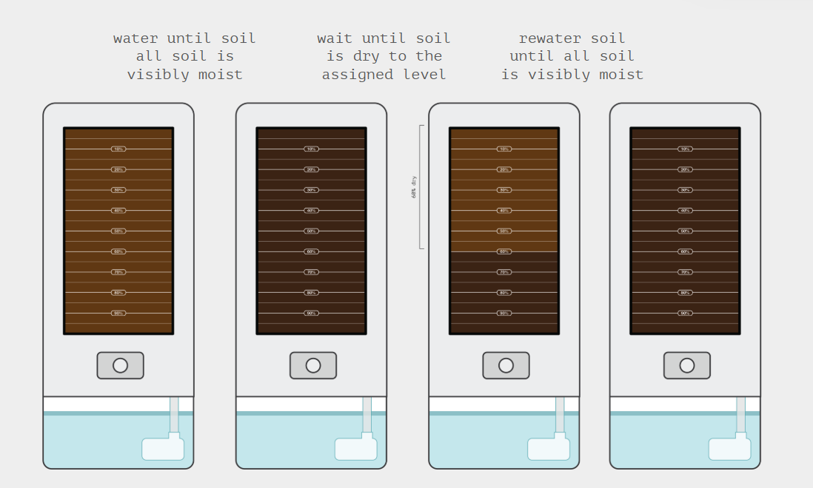
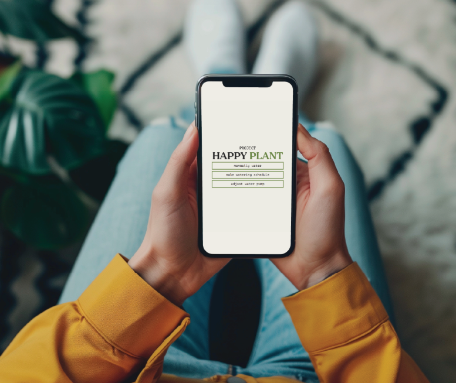

Happy Planter
The Happy Planter is an automated planter like no other. While there are automated watering systems on the market today,
many are not visually appealing with in-the-way tubing and unsightly water vats, fail to provide care for a wide range of
plant species, and do not provide bottom-up watering. Bottom up watering is the process of watering from the base of a plant's
soil rather than pouring water from the top. This method of watering is key to treating water-logged soil, promoting
strong root growth, and limiting pests. Not only does the Happy Planter allow for this type of watering, but does so
in a compact, aesthetic form that can be easily controlled by either the quick water button on the front of the device
or via the web app.




Happy Tracker